BEACON: PARTS MANAGEMENT
Helping aviation professionals manage parts requests to fix planes quickly so they can get back to flying
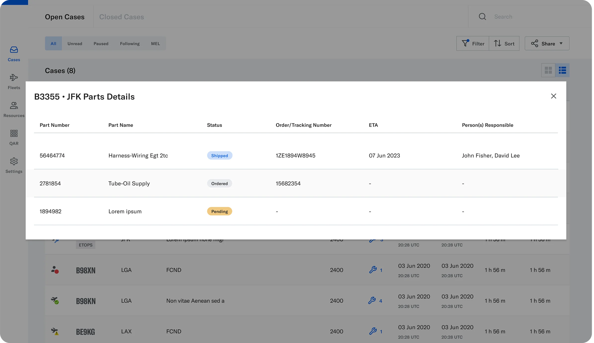
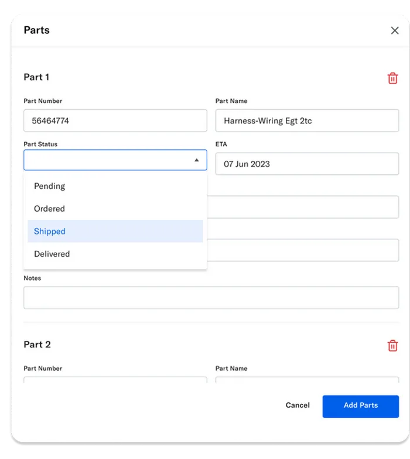
OVERVIEW
Beacon is an aviation maintenance coordination and communication web app. Think of it as a “Slack + Ticketing System” for aviation professionals: it tracks aircraft repairs and improves communication to get planes back in service faster.
I was the main Product Designer who led the strategy, user testing, and design of the Parts Management feature, addressing prioritization of parts and information architecture challenges.
The shipped MVP enabled users to manage, view, and filter parts requests, improving visibility and communication.
Problem space
To understand better, let’s look at an aviation maintenance user’s journey:
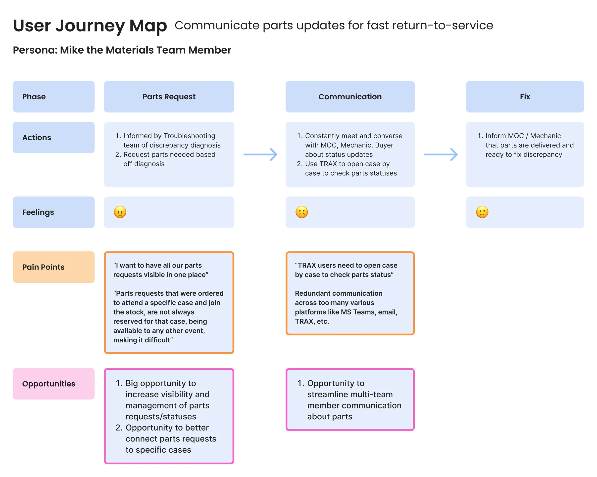
Through customer feedback we had some data about what customers value and what their challenges are. Some key quotes from our existing research database:
“I want to have all our parts requests visible in one place”
“TRAX users need to open case by case to check parts status”
“Parts requests that were ordered to attend a specific case and join the stock, are not reserved for that case, being available to any other event, making it very difficult”
As you can see from the user journey map, aviation maintenance involves multiple teams coordinating in high-pressure environments to get planes operational. When a part is needed for a repair, teams rely on emails, calls, and legacy systems like TRAX or AMOS to track parts availability and status.
The disjointed process and customer data show there is:
- Inefficient communication between maintenance teams, delaying repairs
- Lack of visibility into pending and available parts
- Difficulty in tracking orders, leading to confusion about delivery timelines
The problem
Aviation maintenance professionals lack a centralized system for managing parts requests, leading to inefficiencies in logging, visibility, and communication across multiple platforms.
How might we…
…increase visibility of parts requests and their statuses?
…make it easier for users to manage parts requests?
Ideation & testing
I ideated solutions for visibility and management of parts requests and then narrowed down the best solutions through collaborative sessions with our Eng and Product teams. With those designs, I conducted four internal sales sessions and usability testing sessions with users and affinity mapped my findings.
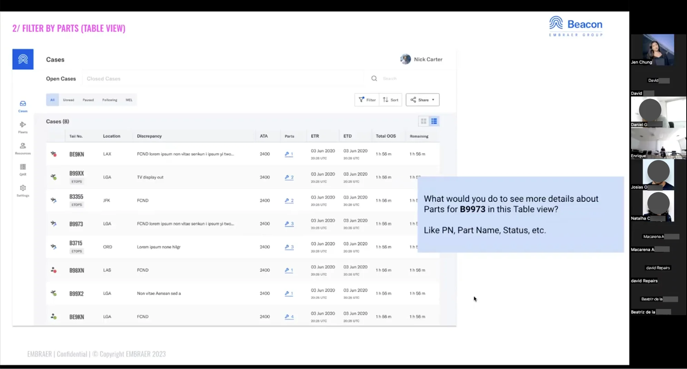
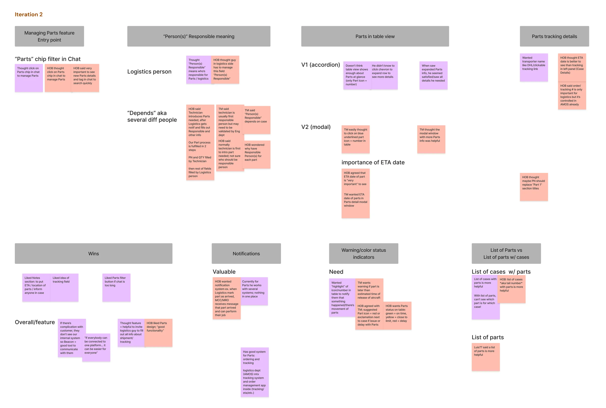
What I improved
After many meetings with Product, Eng, and Design teams and user testing we made significant changes and improvements. Some key improvements I made were:
- Urgency prioritization through color coded part status chips
- Clearer timelines through ETA detail added to part information
- Future information architecture through restructuring where the parts feature lives
1. Urgency prioritization
I improved parts order status chips, especially “Pending” and “Delayed,” through brighter orange and red colors that match users’ mental models for warning/danger so they will have an easier time understanding which parts order needs attention ASAP.
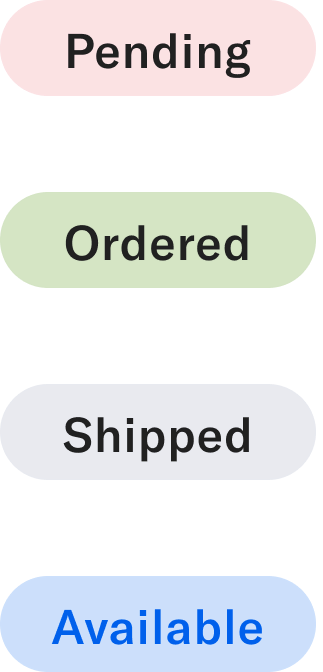
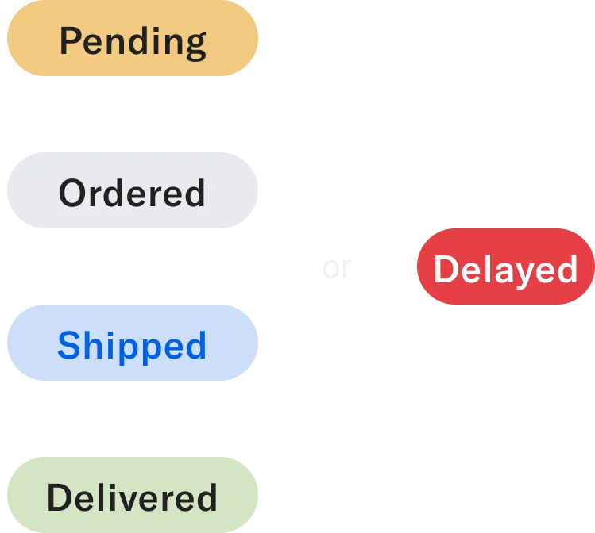
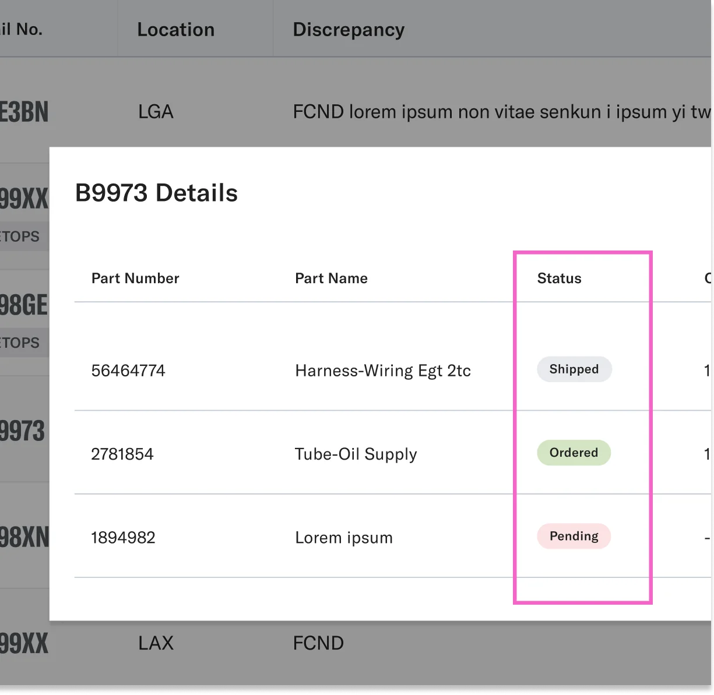
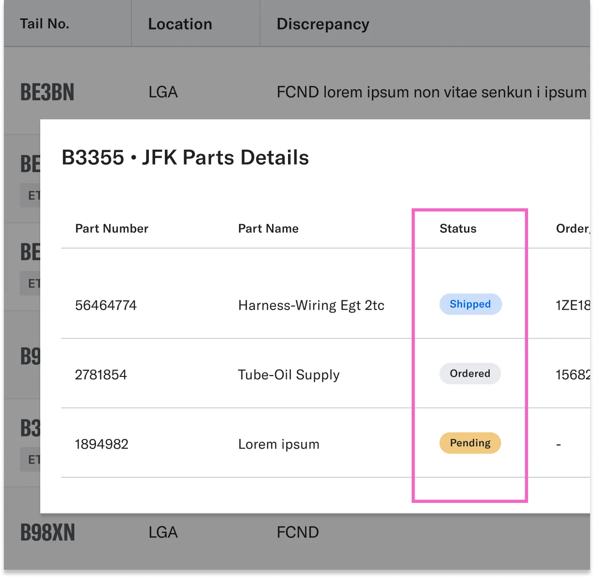
2. Clearer timelines
Added ETA date to part information so users can better plan/adjust timelines and resources accordingly.
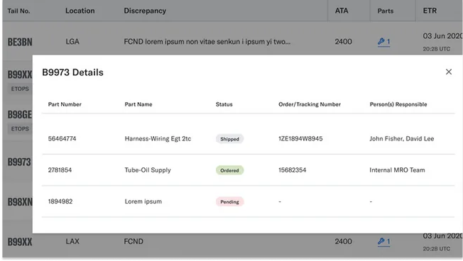
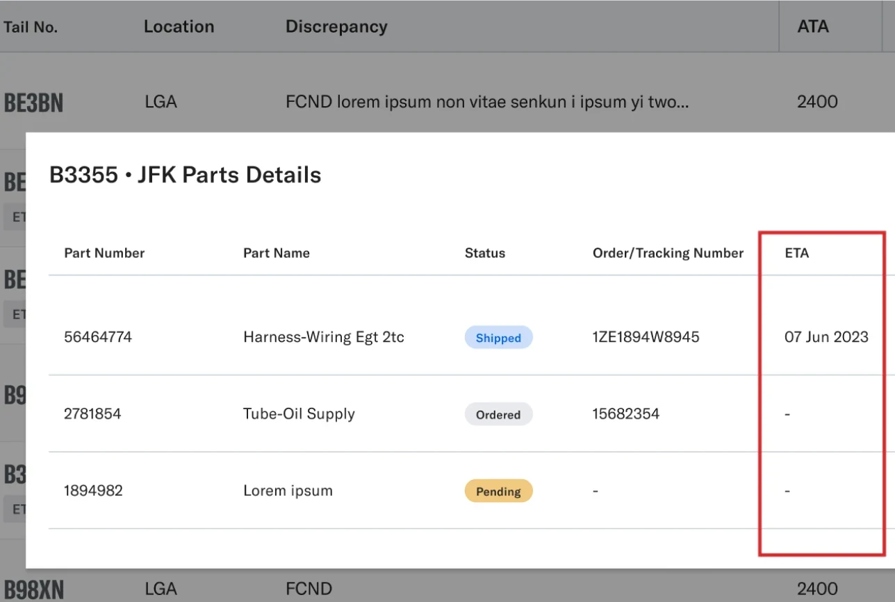
3. Better information architecture (for future)
For a future release, I moved management of parts info under the “Manage” button since info under the pencil edit icon is about editing general details about the case. The Parts feature doesn’t fit well there in terms of IA. It has more details involved, so I decided to move it to the “Manage” area where users can manage people, parts, and GSE.
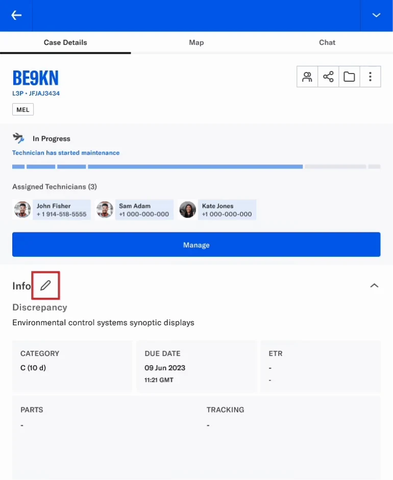
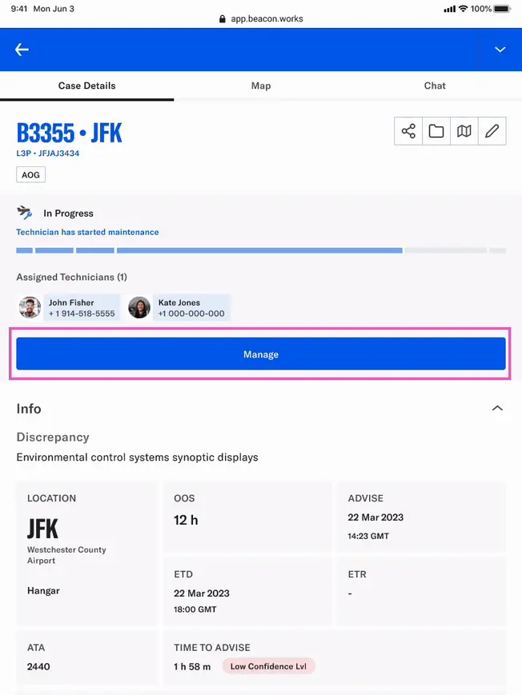
Results
Beacon successfully launched the first release of the Parts feature, allowing users to manage and track parts requests more efficiently.
Visibility
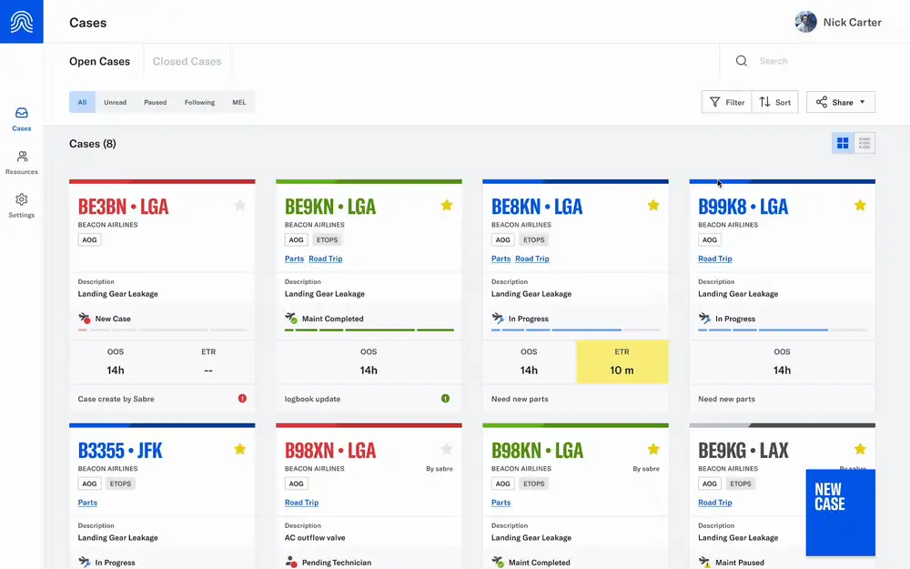
Management
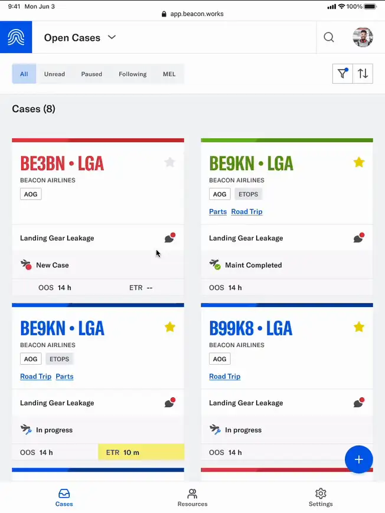
Reflection
Balancing speed, impact, and feasibility
Delivering meaningful value in a first release while balancing design impact, engineering feasibility, and tight timelines is always a challenge. With a lean team of three designers and a packed roadmap, we often had to quickly shift focus, moving straight from this Parts Management feature to the next feature, Internal Teams, to support backend restructuring. Given more time and resources, I’d advocate for follow-ups with customers and closer collaboration with Product and the rest of the team to track adoption and refine usability.
Research learnings
It was exciting to carry out user testing since I advocated for more user feedback! Although we were constrained by group calls, where hierarchical dynamics often prevented candid feedback, it was great to involve customers earlier on in the design process. In future projects, I would work with Product and Sales to explain the importance of user research and best practices to secure buy-in for one-on-one user interviews, ensuring deeper insights into customer pain points.